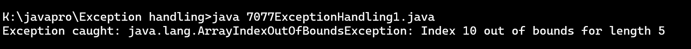
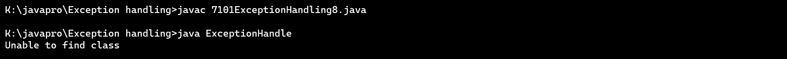
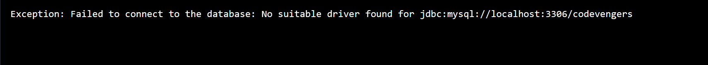

Program 1: Write a Java program that throws an exception and catch it using a try-catch block.
class Exception
{
public static void main(String[] args)
{
try {
int[] arr = new int[5];
arr[10] = 50; // This statement will throw an exception
} catch (ArrayIndexOutOfBoundsException e) {
System.out.println("Exception caught: " + e);
}
}
}
Output:

Program 2: Write a Java program to create a method that takes an integer as a parameter and throws an exception if the number is odd.
class OddNum_Exp {
public static void main(String x[]) {
int a =4;
checknum(a);
a =5;
checknum(a);
}
public static void checknum(int a) {
try {
checkEvenNum(a);
System.out.println(a + " is even.");
} catch (IllegalArgumentException e) {
System.out.println("Exception :" + e.getMessage());
}
}
public static void checkEvenNum(int b) {
if (b % 2 != 0) {
throw new IllegalArgumentException(b + " is odd.");
}
}
}
Output:

Program 3: Write a Java program to create a method that reads a file and throws an exception if the file is not found
import java.io.File;
import java.io.FileNotFoundException;
import java.util.Scanner;
class Read_File {
public static void main(String x[] ) {
try {
r_File("test2.txt");
} catch (FileNotFoundException e) {
System.out.println("Exception: " + e.getMessage());
}
}
public static void r_File(String fname) throws FileNotFoundException {
File file = new File(fname);
Scanner scanner = new Scanner(file);
while (scanner.hasNextLine()) {
String line = scanner.nextLine();
System.out.println(line);
}
scanner.close();
}
}
Output:

Program 4: Write a Java program that reads a list of numbers from a file and throws an exception if any of the numbers are positive
import java.io.BufferedReader;
import java.io.File;
import java.io.FileNotFoundException;
import java.io.FileReader;
import java.io.IOException;
class exception4 {
class PositiveNumberException extends Exception {
public PositiveNumberException(String message) {
super(message);
}
}
public static void main(String[] args) {
File filename = new File("numbers.txt");
try {
new exception4().checkPositiveNumbers(filename);
System.out.println("No positive numbers found.");
} catch (PositiveNumberException e) {
System.err.println("Exception: " + e.getMessage());
} catch (IOException e) {
System.err.println("Error reading the file: " + e.getMessage());
}
}
void checkPositiveNumbers(File filename) throws IOException, PositiveNumberException {
try {
BufferedReader reader = new BufferedReader(new FileReader(filename));
String line;
while ((line = reader.readLine()) != null) {
int number = Integer.parseInt(line);
if (number > 0) {
throw new exception4.PositiveNumberException("Positive number found: " + number);
}
}
reader.close();
} catch (FileNotFoundException e){
throw new IOException("The specified file was not found.", e);
}
}
}
Output:

Program 5: Write a Java program that reads a file and throws an exception if the file is empty.
// Write a Java program that reads a file and throws an exception if the file is empty.
import java.io.File;
import java.io.FileReader;
import java.io.IOException;
class EmptyFileException extends Exception {
public EmptyFileException(String message) {
super(message);
}
}
class CheckEmptyFile {
public static void main(String[] args) {
try {
checkFileNotEmpty("data.txt");
} catch (EmptyFileException e) {
System.out.println("Empty file detected: " + e.getMessage());
} catch (IOException e) {
System.out.println("File not found or cannot be read: " + e.getMessage());
}
}
public static void checkFileNotEmpty(String fileName) throws IOException, EmptyFileException {
File file = new File(fileName);
if (!file.exists() || file.length() == 0) {
throw new EmptyFileException("File is empty or does not exist.");
}
FileReader reader = new FileReader(file);
reader.close();
}
}
Output:

Program 6: Write a Java program that reads a list of integers from the user and throws an exception if any numbers are duplicates
/* Write a Java Program that reads a list of integers from the user and throws an exception if any numbers are duplicates.*/
import java.util.*;
class DuplicateChecker {
public static void main(String[] args) {
Scanner scanner = new Scanner(System.in);
System.out.print("Enter the number of elements: ");
int n = scanner.nextInt();
List numbers = new ArrayList<>();
System.out.println("Enter " + n + " integers:");
try {
for (int i = 0; i < n; i++) {
int num = scanner.nextInt();
if (numbers.contains(num)) {
throw new DuplicateNumberException("Duplicate number found: " + num);
}
numbers.add(num);
}
System.out.println("No duplicates found!");
} catch (DuplicateNumberException e) {
System.out.println(e.getMessage());
}
}
}
Output:

Program 7: Write a Java program to create a method that takes a string as input and throws an exception if the string does not contain vowels.
import java.util.Scanner;
class vowelchecker
{
public static void main(String args[])
{
try
{
Scanner sc = new Scanner(System.in);
System.out.print("Enter a String : ");
String str = sc.nextLine();
checkForVowels(str);
System.out.println("String Contains Vowels.");
}
catch(NoVowelsException e)
{
System.out.println("Exception : "+e.getMessage());
}
}
static void checkForVowels(String input) throws NoVowelsException
{
if(!input.matches(".*[AEIOUaeiou].*"))
{
throw new NoVowelsException("The Input string does not contains any vowels.");
}
}
}
class NoVowelsException extends Exception
{
public NoVowelsException(String message)
{
super(message);
}
}
Output:

Program 8: Write a Java program to connect the Java API to Database, if connection not successful then throw an exception
//Write a Java program to connect the Java API to Database, if connection not successful then throw an exception
import java.sql.*;
class ExceptionHandle
{
public static void main(String st[])
{
try
{
Class.forName("com.mysql.jdbc.Driver");
Connection c=DriverManager.getConnection("jdbc:mysql://localhost:3306/bharat?useSSL=false","root","god123456");
System.out.println("Connect to database successfully");
c.close();
}catch(ClassNotFoundException e){System.out.println("Unable to find class");}
catch(SQLException e){System.out.println("Fail to connect!");}
}
}
Output:

Program 9: Write a Java program to manage the driver with path, username and password, if not successful then throw an exception
import java.sql.Connection;
import java.sql.DriverManager;
import java.sql.SQLException;
class DatabaseManager {
public static void main(String[] args) throws ClassNotFoundException {
// Class.forName("com.mysql.jdbc.Driver");
String dbUrl = "jdbc:mysql://localhost:3306/codevengers";
String username = "root";
String password = "";
try {
Connection connection = new DatabaseManager().getConnection(dbUrl, username, password);
System.out.println("Connection successfull");
connection.close();
} catch (DatabaseConnectionException e) {
System.out.println("Exception: " + e.getMessage());
} catch (SQLException e) {
System.out.println("SQL Exception: " + e.getMessage());
}
}
Connection getConnection(String dbUrl, String username, String password) throws DatabaseConnectionException {
try {
return DriverManager.getConnection(dbUrl, username, password);
} catch (SQLException e) {
throw new DatabaseConnectionException("Failed to connect to the database: " + e.getMessage());
}
}
}
class DatabaseConnectionException extends Exception {
public DatabaseConnectionException(String message) {
super(message);
}
}
Output:

Program 10: Write a Java program to throw the SQL Query, insert, delete, update, if not successful then throw an exception
import java.sql.Connection;
import java.sql.DriverManager;
import java.sql.PreparedStatement;
import java.sql.SQLException;
class DatabaseOperationExample {
private static final String JDBC_URL = "jdbc:mysql://localhost:3306/your_database_name";
private static final String USERNAME = "your_username";
private static final String PASSWORD = "your_password";
public static void main(String[] args) {
try {
Class.forName("com.mysql.cj.jdbc.Driver");
try (Connection connection = DriverManager.getConnection(JDBC_URL, USERNAME, PASSWORD)) {
if (!insertData(connection, "John Doe", 25, "john@example.com")) {
throw new SQLExceptionCustom("Insert operation failed");
}
if (!updateData(connection, 1, "John Doe Updated")) {
throw new SQLExceptionCustom("Update operation failed");
}
if (!deleteData(connection, 1)) {
throw new SQLExceptionCustom("Delete operation failed");
}
}
} catch (ClassNotFoundException | SQLException | SQLExceptionCustom e) {
e.printStackTrace();
}
}
private static boolean insertData(Connection connection, String name, int age, String email) throws SQLException {
String insertQuery = "INSERT INTO your_table_name (name, age, email) VALUES (?, ?, ?)";
try (PreparedStatement preparedStatement = connection.prepareStatement(insertQuery)) {
preparedStatement.setString(1, name);
preparedStatement.setInt(2, age);
preparedStatement.setString(3, email);
int rowsAffected = preparedStatement.executeUpdate();
return rowsAffected > 0;
}
}
private static boolean updateData(Connection connection, int id, String newName) throws SQLException {
String updateQuery = "UPDATE your_table_name SET name = ? WHERE id = ?";
try (PreparedStatement preparedStatement = connection.prepareStatement(updateQuery)) {
preparedStatement.setString(1, newName);
preparedStatement.setInt(2, id);
int rowsAffected = preparedStatement.executeUpdate();
return rowsAffected > 0;
}
}
private static boolean deleteData(Connection connection, int id) throws SQLException {
String deleteQuery = "DELETE FROM your_table_name WHERE id = ?";
try (PreparedStatement preparedStatement = connection.prepareStatement(deleteQuery)) {
preparedStatement.setInt(1, id);
int rowsAffected = preparedStatement.executeUpdate();
return rowsAffected > 0;
}
}
}
class SQLExceptionCustom extends SQLException {
public SQLExceptionCustom(String message) {
super(message);
}
}
Output:
Program 11: Write a Java program to show an example of throws Keyword.
class Main {
static void checkAge(int age) {
if (age < 18) {
throw new ArithmeticException("Access denied - You must be at least 18 years old.");
}
else {
System.out.println("Access granted - You are old enough!");
}
}
public static void main(String[] args) {
checkAge(15); // Set age to 15 (which is below 18...)
}
}
Output:

Program 12: Write a Java program to show an example of multiple catch
class multiplecatch{
public static void main(String[] args) {
try{
int a[]=new int[5];
a[5]=30/0;
}
catch(ArithmeticException e)
{
System.out.println("Arithmetic Exception occurs");
}
catch(ArrayIndexOutOfBoundsException e)
{
System.out.println("ArrayIndexOutOfBounds Exception occurs");
}
catch(Exception e)
{
System.out.println("Parent Exception occurs");
}
System.out.println("rest of the code");
}
}
Output:

Program 13: Write a Java program to show an example of nested try block.
class NestedTryBlock{
public static void main(String args[]){
//outer try block
try{
//inner try block 1
try{
System.out.println("going to divide by 0");
int b =39/0;
}
//catch block of inner try block 1
catch(ArithmeticException e)
{
System.out.println(e);
}
//inner try block 2
try{
int a[]=new int[5];
//assigning the value out of array bounds
a[5]=4;
}
//catch block of inner try block 2
catch(ArrayIndexOutOfBoundsException e)
{
System.out.println(e);
}
System.out.println("other statement");
}
//catch block of outer try block
catch(Exception e)
{
System.out.println("handled the exception (outer catch)");
}
System.out.println("normal flow..");
}
}
Output: